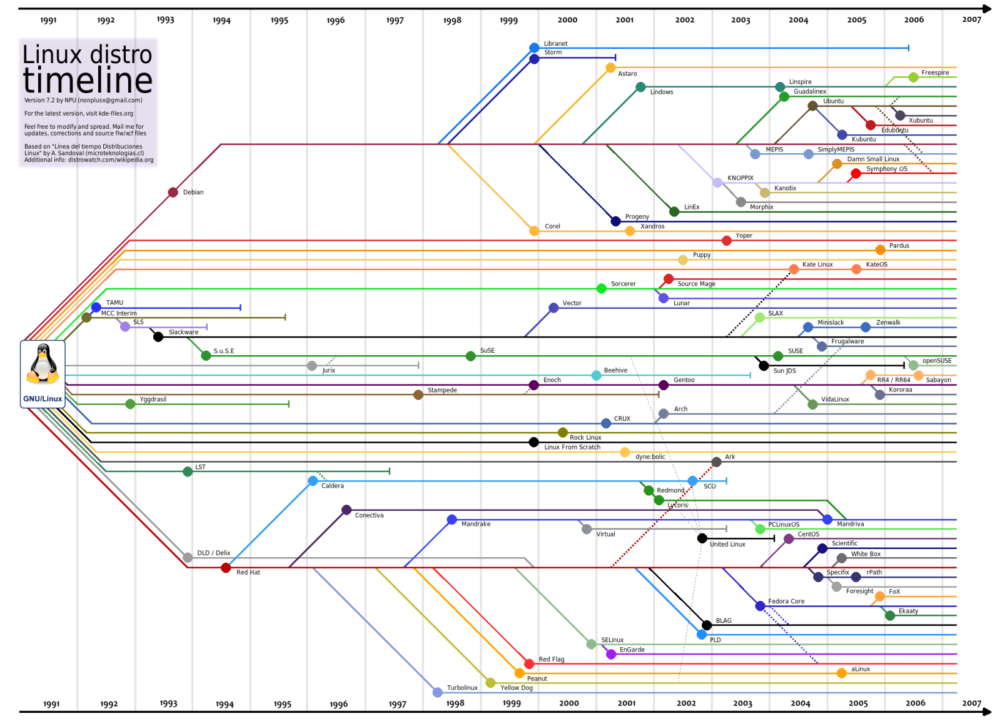

If you’ve heard anything at all about Linux, you’ve probably heard of Linux distributions – often shortened to “Linux distros.” When deciding to use Linux – on a desktop computer or server – you’ll first need to choose a distro.
For many people, Ubuntu has become synonymous with Linux. But Ubuntu is one of many distros, and you have a lot of choice when it comes to Linux.
Linux isn’t like Windows or Mac OS X. Microsoft combines all the bits of Windows internally to produce each new release of Windows and distributes it as a single package. If you want Windows, you’ll need to choose one of the versions Microsoft is offering.
Linux works differently. The Linux operating system isn’t produced by a single organization. Different organizations and people work on different parts. There’s the Linux kernel (the core of the operating system), the GNU shell utilities (the terminal interface and many of the commands you use), the X server (which produces a graphical desktop), the desktop environment (which runs on the X server to provide a graphical desktop), and more. System services, graphical programs, terminal commands – many are developed independently from another. They’re all open-source software distributed in source code form.
If you wanted to, you could grab the source code for the Linux kernel, GNU shell utilities, Xorg X server, and every other program on a Linux system, assembling it all yourself. However, compiling the software would take a lot of time – not to mention the work involved with making all the different programs work properly together.
Linux distributions do the hard work for you, taking all the code from the open-source projects and compiling it for you, combining it into a single operating system you can boot up and install. They also make choices for you, such as choosing the default desktop environment, browser, and other software. Most distributions add their own finishing touches, such as themes and custom software – the Unity desktop environment Ubuntu provides, for example.
When you want to install new software or update to new versions of software with important security updates, your Linux distribution provides them in precompiled, packaged form. These packages are fast and easy to install, saving you from doing the hard work yourself.
There are multiple different Linux distributions. Many have different philosophies – some, like Fedora, refuse to include closed-source software, while others, like Mint, include closed-source stuff to make it easier on users. They include different default software – like how Ubuntu includes Unity, Ubuntu derivatives include other desktop environments, Fedora includes GNOME Shell, and Mint includes Cinnamon or MATE.
Many also use different package managers, configuration utilities, and other software. Some distributions are bleeding edge and won’t receive support for very long. Others, such as Ubuntu LTS or Red Hat Enterprise Linux, are designed to be stable distributions that will be supported with security updates and bug fixes for many years.
Some Linux distributions are intended for desktop computers, some for servers without a graphical interface, and others for special uses, such as home theater PCs.
Some are designed to work out of the box – like Ubuntu – while others require a bit more tweaking, such as Arch Linux.
Different Linux distributions are suited for different purposes. Which Linux distribution you should choose will depend on what you’re doing with it and your personal preferences.
If you’re a desktop user, you’ll probably want something simple, like Ubuntu or Mint. Some people may prefer Fedora, openSUSE, or Mageia (based on Mandriva Linux).
People looking for a more stable, well-tested system may want to go with Debian, CentOS (a free version of Red Hat Enterprise Linux), or even Ubuntu LTS.
There’s no one right distribution for everyone, although everyone has a favorite. Linux distributions offer choice, which can be messy, but also very useful. Anyone can make their own distribution by assembling it from the source code themselves, or even taking an existing distribution and modifying it – that’s why there are so many Linux distributions.